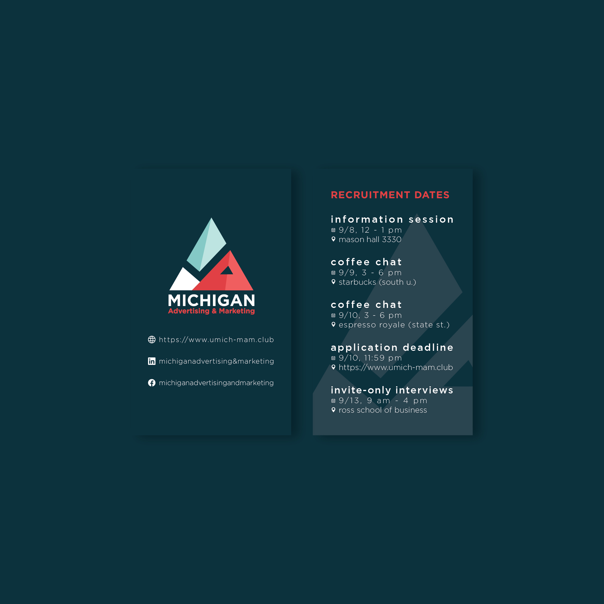

×

As of May 2019, I am the Vice President of Creative Strategy at the Michigan Advertising and Marketing club. In this position, I oversee and lead our 15 Creative Design members across our 15 different clients. As the lead designer representing the club as a whole, I've designed business cards to advertise our club to primarily freshmen and sophomores interested in increasing their on-campus involvement. Within the club itself, I've also helped design Member Spotlight awards to celebrate and reward our hardest-working members for their significant achievements and contributions to the club.
As part of my VP — Creative Design duties, I educate new Creative Design members on design thinking and strategy. Workshop topics so far have been Best Practices in Design (aka Avoiding Lawsuits 101), Visual Literacy, Color Psychology in Advertising, and Designing for Accessibility.
For presentations, I tend not to use too many words per slide. To be honest, my ideal number of words per slide is less than five. However, I understand how this might lead to my presentations being difficult to understand for viewers who have not or cannot attend my presentations. So because I'm always thinking of how to make my work as accessible as possible, I leave thorough notes beneath every slide to emulate the verbal content of my presentations, so that those who've missed it may hopefully get a comprehensive understanding of all the material shown.